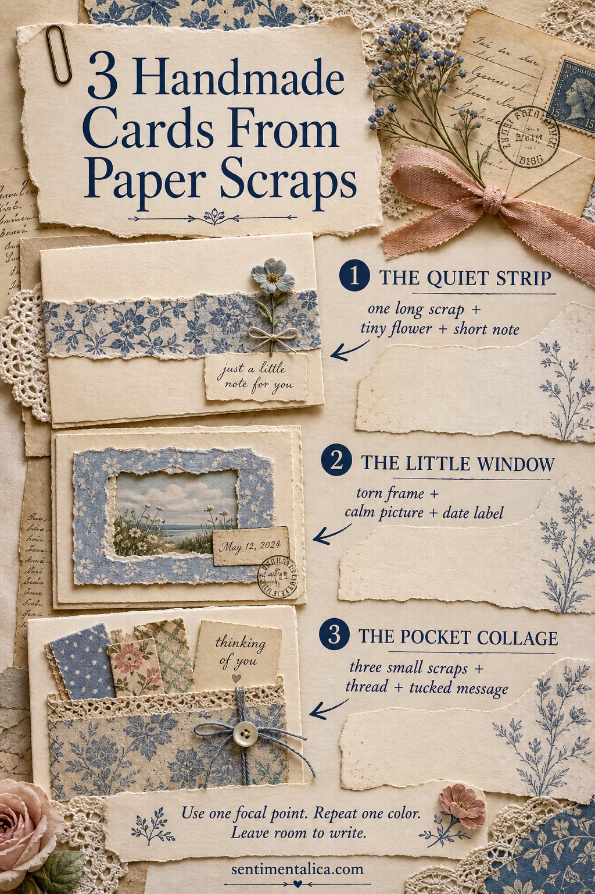
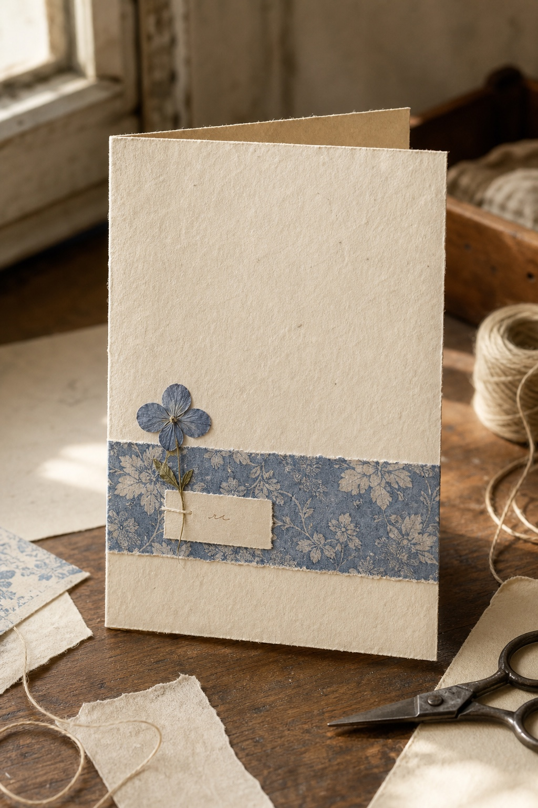
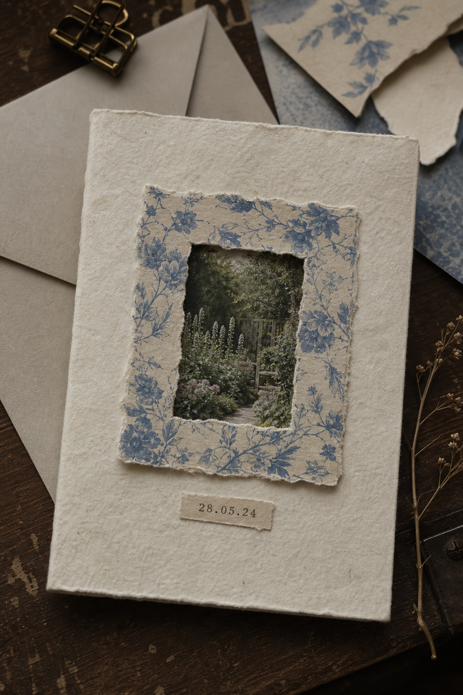
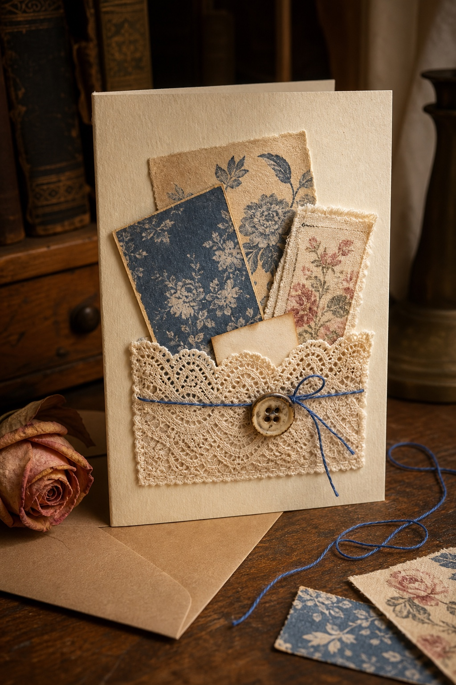
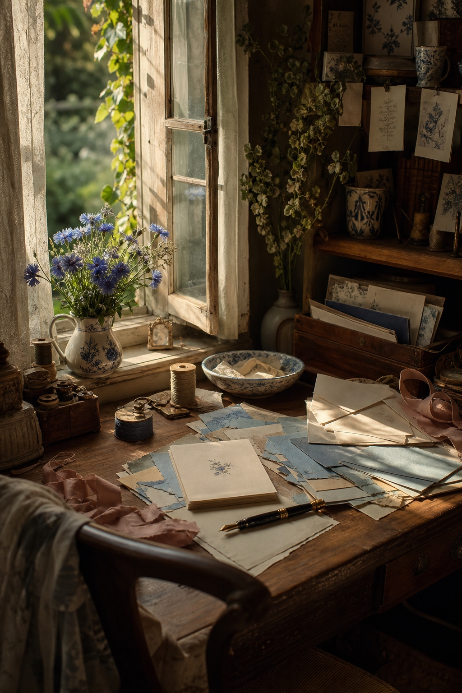

Paper scraps are easy to save and surprisingly difficult to use. The prettiest pieces often feel too small for a full project, so they wait in a box while we reach for a new sheet.
A handmade card is the gentlest way to let those small pieces matter. You do not need a complicated composition or a perfectly matched collection. You need one focal point, one repeated color, and enough quiet paper for your message to still feel important.
These three layouts begin with scraps you may already have: a narrow strip, a small picture, a few torn rectangles, lace, thread, or the corner of a patterned page. Choose one method and let the card stay simple.

1. Make the quiet strip card
Choose one long scrap that can cross the lower third of a folded cream card. Torn edges make the strip feel softer, but a clean cut works too. Add one tiny flower, button, postage mark, or paper shape where the eye naturally lands.

The secret is stopping early. Keep the upper part of the card almost empty and place a short note close to the focal detail. A strip gives the design structure; the blank paper makes it feel thoughtful rather than unfinished.
When a scrap is beautiful, it does not need five companions. Give it room to become the reason for the card.
This layout is especially useful for narrow patterned offcuts, ribbon-shaped papers, book-page margins, and pieces left after trimming a larger printable page.
2. Build a little window
Start with a small calm picture: a garden corner, landscape, old doorway, flower, or tiny piece of family ephemera. Tear four slim paper strips and arrange them around the image like a loose frame. The strips do not need to meet perfectly. Uneven edges are part of the handmade feeling.

Add one grounding detail below the window—a date, a place name, or two handwritten words. Keep everything else quiet. This method turns a picture that was too small to use into a tiny place the recipient can look into.
If the frame and picture compete, soften one of them. Choose a plainer frame for a detailed image, or use a patterned frame around a simple sky, flower, or doorway. The eye should always know which piece to notice first.
3. Create a pocket collage
For the smallest scraps, make a shallow pocket across the card front. A folded paper strip, a length of lace, or a narrow piece of fabric can hold three coordinated offcuts. Let them rise to different heights so each layer remains visible.

Choose the scraps by role rather than by perfection: one dark anchor, one softer pattern, and one warm or floral accent. Tie thread around the pocket or add one old button if the lower edge needs weight. Then tuck in a tiny message that can be removed and kept.
A pocket card can become bulky very quickly. Keep the contents flat and leave the inside of the card mostly undecorated. The pleasure is in discovering the little layers, not in filling every surface.

Let the message finish the design
Before gluing, place the card inside its envelope. If the front catches, remove one layer. Then write the message before adding the final tiny detail. This keeps the words from becoming an afterthought.
When you want a painted focal point rather than another pattern, a single botanical image can do that job. Choose one flower or garden detail, repeat one of its colors in the scraps, and keep the printable image close to the message. The card will still feel made by you because the meaning comes from your arrangement and words.
If you need an on-theme starting point, the live floral collections below can supply that one clear watercolor focal image. The methods above work just as well with saved wrapping paper, old correspondence, or the smallest pieces already on your desk.
Save the three-layout guide for the next time your scrap box feels full, or browse more Sentimentalica paper and journal ideas.